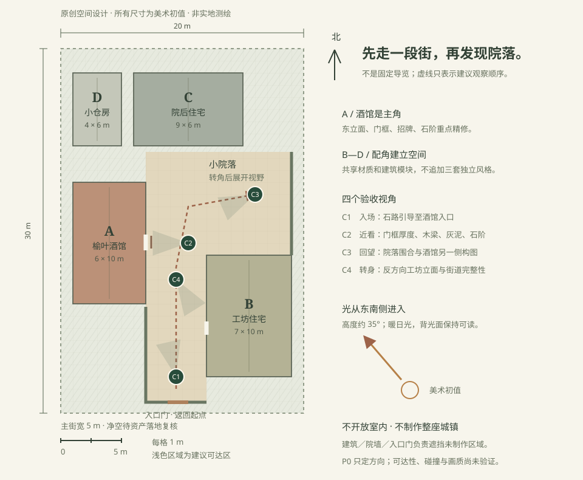

R2门窗不是贴在墙上的图案
观察木梁与灰泥的高差、门洞深度、窗框和屋瓦搭接。酒馆入口要经得起约 1 米近看。
不照搬：鲜红墙面、现代门牌和落水管；不把建筑年代直接认定为中世纪。
中世纪欧式小镇 / 自然写实方向
以里屈维一带的木骨架、灰泥和石路为参考，设计一个原创街角。先完成可近看的小地方，不铺开整座城镇。
4 张照片均已核对作者与许可，保持原比例显示。点击可放大；图片仅作参考，不作为 3D 贴图。
观察木梁与灰泥的高差、门洞深度、窗框和屋瓦搭接。酒馆入口要经得起约 1 米近看。
不照搬：鲜红墙面、现代门牌和落水管；不把建筑年代直接认定为中世纪。
借用高低屋面、深色入口和墙边藤蔓的层次。背光墙面仍要看得清材料，不追求压黑。
不照搬：塔楼、时钟和电线；不复制整座院落，避免扩大制作量。
参考木骨架上层、石砌基座、悬挑招牌与窄巷围合。墙面不齐整，但结构关系清楚，旧化集中在接缝和底部。
不照搬：车辆、店面广告、消防设施和花箱堆叠；不让全场景每块石头都同样破旧。
手动选定的美术方向；不是照片采样值，也不是物理材质参数。
4 栋建筑围合主街与小院。A 是重点，B—D 共用风格和模块。下面是设计平面图，不是 3D 成品。

旧项目的经验不再停留在“先做样片”。这次要区分技术可用、方向可接受和最终品质基线。
先认可这份参考板和布局，再开始筛选、实际导入资产。关键资产拿不到就换来源或缩范围，不默默用程序占位模型代替。当前尚未选定或购买 3D 资产，Three.js／UE 运行路线也未最终锁定。
① 这种木骨架与石砌混合的建筑风格是否合适？ ② 酒馆街角＋小院的范围是否合适？ ③ 配色与自然暖光是否符合期待？